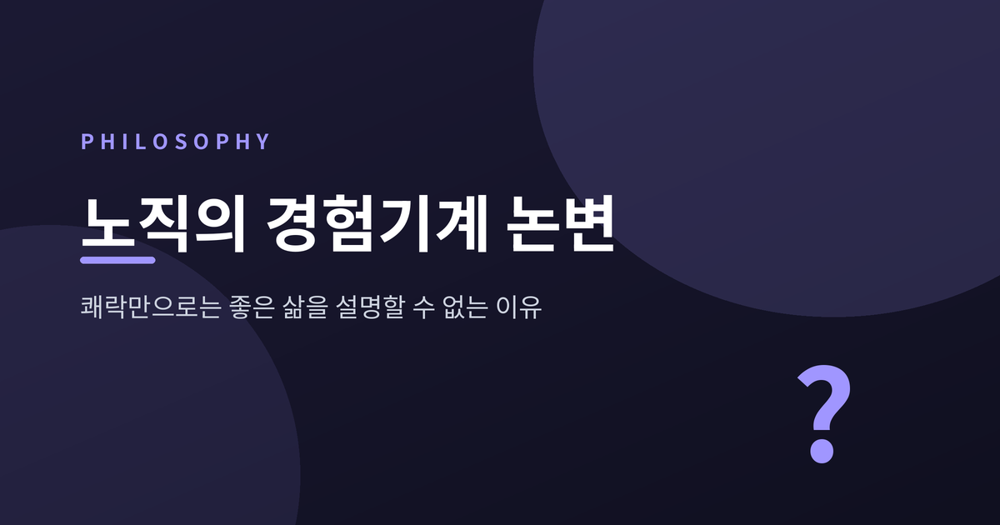
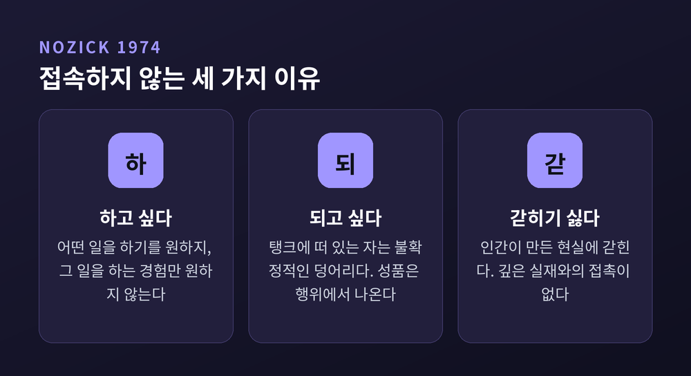
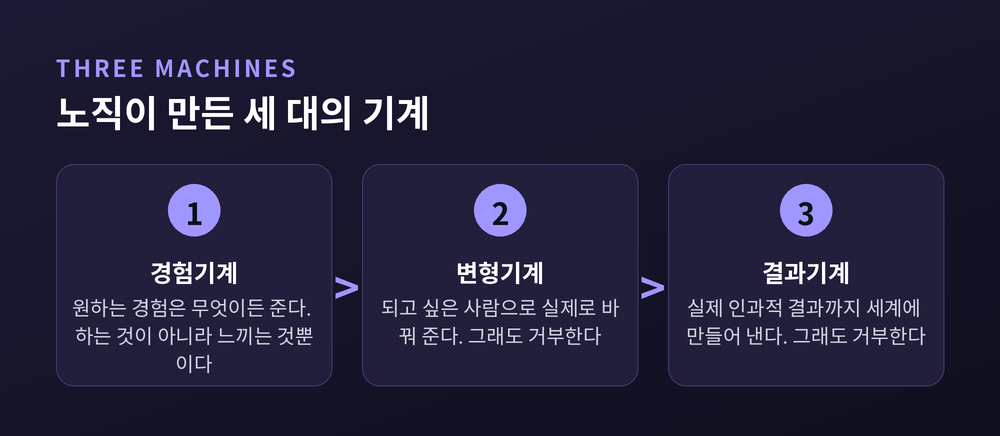
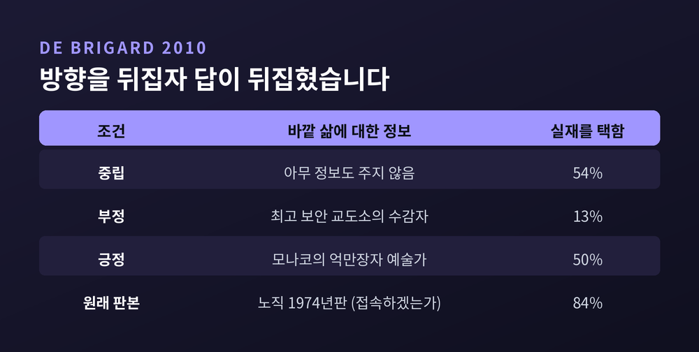
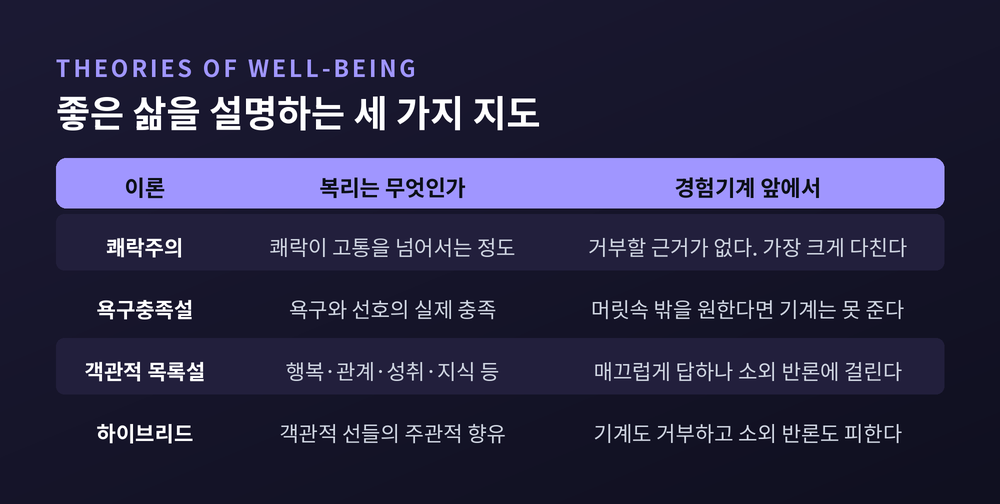
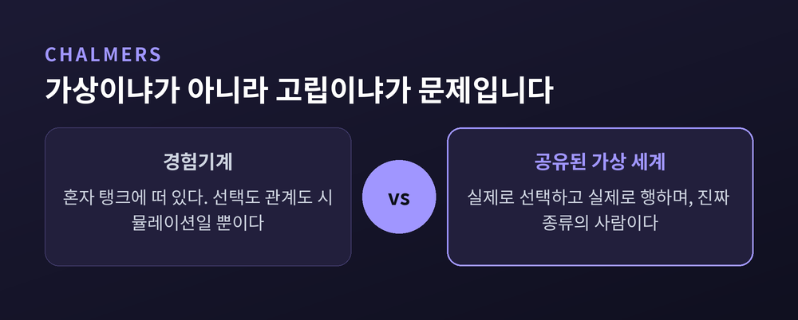

세 줄 요약
이번 글에서는 로버트 노직의 경험기계 사고실험을 처음부터 끝까지 따라가 보겠습니다. 원문이 실제로 어떤 논증이었는지, 어떤 반론에 부딪혔는지, 그리고 가상현실과 AI가 일상이 된 지금 이 물음이 어떻게 달라졌는지를 순서대로 짚어 보겠습니다.
로버트 노직의 『아나키에서 유토피아로』는 1974년 뉴욕 베이직북스에서 나왔습니다. 이듬해 전미도서상 철학·종교 부문을 받았습니다.
이 책은 하버드 동료였던 존 롤스의 『정의론』(1971)에 대한 자유지상주의 진영의 응답이었습니다. 개인의 권리 존중이 국가 행위를 평가하는 유일한 기준이며, 따라서 정당한 국가는 생명과 자유와 재산과 계약을 지키는 일에만 활동을 제한하는 최소국가뿐이라는 것이 노직의 결론이었습니다.
경험기계는 그 두꺼운 정치철학 책의 42쪽에서 45쪽 사이에 있습니다. 네 쪽입니다.
분량으로 보면 곁가지에 가깝습니다. 그런데 이 네 쪽이 이후 반세기 동안 윤리학 개론서의 고정 장면이 되었습니다.
노직이 상정한 장치는 이렇습니다. 아주 뛰어난 신경심리학자들이 당신의 뇌를 자극합니다. 당신은 위대한 소설을 쓰고 있다고, 친구를 사귀고 있다고, 흥미로운 책을 읽고 있다고 생각하고 느낍니다. 그동안 내내 당신은 뇌에 전극을 꽂은 채 탱크 안에 떠 있습니다.
그리고 묻습니다. 평생 이 기계에 접속해서, 당신 인생의 경험을 미리 프로그래밍하시겠습니까.
노직이 정말 던진 물음은 그다음 문장입니다. "우리 삶이 안에서 어떻게 느껴지는가 말고, 그 밖에 무엇이 우리에게 중요할 수 있는가."
노직은 대다수가 접속하지 않을 것이라고 보았습니다. 그리고 그 이유를 셋으로 정리했습니다.
첫째, 우리는 어떤 일들을 하기를 원합니다. 그 일을 하는 경험만 원하는 것이 아닙니다. 소설을 썼다는 느낌이 아니라 소설을 쓰는 일 자체를 원한다는 뜻입니다.
둘째, 우리는 어떤 사람이기를 원합니다. 이 대목의 원문이 가장 유명합니다.
"탱크 안에 떠 있는 자는 불확정적인 덩어리다. 그가 용감한가, 친절한가, 지적인가, 재치 있는가, 사랑이 있는가? 단지 알기 어렵다는 게 아니라 — 그가 그러할 방법 자체가 없다. 기계에 접속하는 것은 일종의 자살이다."
성품은 행위에서 나옵니다. 행위가 없으면 성품이 있을 자리가 없습니다. 용기 있는 사람이란 용기 있는 일을 한 사람이지, 용기 있다고 느낀 사람이 아닙니다.
셋째, 인간이 만든 현실에 갇힙니다. 기계 안의 세계는 사람이 구성할 수 있는 것보다 깊거나 중요할 수 없습니다. 더 깊은 실재와의 실제 접촉이 없습니다. 그 접촉의 경험만 시뮬레이션될 뿐입니다.

여기서 대부분의 요약이 멈춥니다. 그런데 노직의 논증은 여기서 끝나지 않습니다.
그는 반론을 미리 막기 위해 기계를 두 대 더 상상합니다.
먼저 변형기계입니다. 이것은 당신이 되고 싶은 어떤 종류의 사람으로든 당신을 실제로 바꿔 주는 기계입니다. 두 번째 이유였던 '불확정적인 덩어리' 문제가 사라집니다. 그래도 우리는 접속하지 않을 것이라고 노직은 말합니다. 그렇다면 경험과 우리가 어떤 사람인가에 더해서 또 무언가가 중요하다는 뜻입니다.
다음은 결과기계입니다. 경험을 주고, 우리를 변형시키고, 나아가 실제 인과적 결과까지 세계에 만들어 냅니다. 세 번째 이유였던 '인공 현실' 문제까지 사라집니다.
그래도 접속하지 않을 것이라고 노직은 씁니다. 그리고 이렇게 끝맺습니다.
"우리가 욕망하는 것은 실재와 접촉하면서 우리 자신이 사는 것입니다. 그리고 이것을 기계가 우리를 대신해 해 줄 수는 없습니다."
이 구조가 중요합니다. 노직의 논변은 "기계가 아직 충분히 좋지 않아서"가 아닙니다. 기계가 아무리 완벽해져도 대체할 수 없는 것이 있다는 주장입니다. 기계 성능을 아무리 올려도 논변은 흔들리지 않도록 설계되어 있습니다.

논변의 뼈대는 간명합니다. 쾌락이 전부라면 접속하지 않을 이유가 없습니다. 그런데 접속하지 않을 이유가 있습니다. 따라서 쾌락이 전부는 아닙니다. 후건부정입니다.
흔히 이 논변의 표적을 쾌락주의라고만 소개합니다. 정확한 설명은 아닙니다.
실제 과녁은 더 넓습니다. 심적 상태론, 곧 우리 경험이 안에서 어떻게 느껴지는가만이 가치를 갖는다는 모든 견해가 같은 반박을 받습니다. 의식에 영향을 주지 않는 것은 나에게 좋을 수도 나쁠 수도 없다는 견해라면, 쾌락주의가 아니어도 걸립니다. 자신이 원하는 것을 얻고 있다고 '믿는 것'을 중시하는 주관적 욕구충족설도 마찬가지입니다.
노직이 함께 요구한 조건들도 자주 잊힙니다. 형이상학과 인식론은 접어 두라고 했습니다. "실재란 무엇인가"는 통 속의 뇌 논변이 다룰 물음이지 여기서 다룰 물음이 아닙니다. 맥락도 무시하라고 했습니다. 기계 안의 삶을 고문받는 삶과 비교하면 안 되고, 쾌락적으로 평균적인 삶을 놓고 비교해야 합니다.
논변의 논리적 형태에도 유의할 점이 있습니다. "대다수가 실재를 선호한다"에서 "실재는 내재적으로 가치 있다"로 곧장 건너가면 사실에서 당위를 끌어내는 오류입니다. 그래서 이 논변은 연역이 아니라 최선의 설명으로의 추론으로 읽어야 합니다. 많은 이에게 무언가가 내재적으로 중요하다는 사실을 가장 잘 설명하는 가설이 "그것은 내재적으로 가치 있다"라는 것입니다.
그리고 바로 이 지점이 훗날 공격받습니다. 정말 그것이 최선의 설명인가.
노직은 자기 논변의 핵심 전제를 한 번도 실증적으로 확인하지 않았습니다. 사람들이 접속하지 않을 것이라고 논증했을 뿐입니다. 이후 철학자들은 그것을 자기 직관과 대조하고 넘어갔습니다. 어떤 이는 자기 선호를, 어떤 이는 친구 몇 명과 자기 수업 학생들의 답을 인류 전체로 외삽했습니다.
2010년, 펠리페 데 브리가드가 이 전제를 실제로 시험했습니다.
설계가 영리합니다. 그는 질문의 방향을 뒤집었습니다. 미국 대학 학부생 72명에게 이렇게 물었습니다. 당신은 이미 경험기계 안에 있습니다. 접속을 끊겠습니까.
그리고 바깥의 실제 삶에 대해 세 가지 중 하나를 알려주었습니다.

아무 정보도 주지 않았을 때 접속을 끊겠다고 한 사람은 54%였습니다. 노직 판본에서 84%가 실재를 택했던 것과 비교하면 큰 낙차입니다.
바깥에서 최고 보안 교도소의 수감자로 산다고 알려주자 13%로 떨어졌습니다. 여기까지는 예상 범위입니다.
문제는 세 번째입니다. 바깥에서 모나코에 사는 억만장자 예술가로 산다고 알려주었는데도 나가겠다는 사람은 50%에 그쳤습니다.
쾌락의 크기가 정말 결정 요인이라면 이 조건의 이탈률은 아무 정보도 없는 조건보다 높아야 합니다. 그런데 오히려 조금 낮았습니다.
데 브리가드의 해석은 이렇습니다. 사람들이 기계에 들어가지 않으려는 것은 실재를 중시해서가 아니라, 지금 있는 자리를 떠나기 싫어서일 가능성이 큽니다. 현상유지 편향입니다.
이 편향은 다른 데서도 확인됩니다. 한 실험에서 학생 한 집단에는 대학 로고 머그컵을, 다른 집단에는 초콜릿바를 준 뒤 서로 교환할 기회를 주었더니 약 90%가 처음 받은 것을 그대로 가졌습니다.
댄 웨이저스는 편향을 양쪽으로 상쇄하는 시나리오를 만들었습니다. 판단 대상을 '나'가 아니라 '낯선 사람'으로 바꾸고, 그 사람이 이미 인생의 절반을 기계 안에서 보냈다고 설정한 것입니다. 결과는 55%가 쾌락을 택했습니다. 근소한 다수이기는 하나 방향이 완전히 뒤집혔습니다.
사고실험은 상상의 장치입니다. 참가자가 설정을 지키지 못하면 답이 오염됩니다.
웨이저스의 조사에서 접속을 거부한 사람의 34%는 설정을 명시적으로 어겼습니다. "기계가 고장 나면 어떡하나", "약속한 행복을 못 주면 어떡하나" 같은 답입니다. 시나리오에는 기계가 완벽하게 작동한다고 적혀 있는데도 그렇습니다.
도덕적 관심도 끼어듭니다. "나는 다른 사람들에 대한 책임이 있어서 접속할 수 없다", "남편과 아들을 무시할 수 없다" 같은 답이 나옵니다. 그런데 노직은 1974년판에서 다른 사람들도 원하는 경험을 갖기 위해 접속할 수 있으므로 남을 위해 남아 있을 필요가 없다고 명시했습니다.
『매트릭스』도 방해가 됩니다. 그 영화에서 기계는 전쟁으로 인류를 이기고 노예화한 존재입니다. 착취당하지 않으려는 직관이 함께 딸려 옵니다. 반면 노직이 1989년 『성찰하는 삶』에서 다듬은 판본에서 기계를 제공하는 것은 "다른 은하에서 온 친절하고 신뢰할 만한 존재들"입니다. 전혀 다른 이야기입니다.
그렇다면 훈련받은 철학자는 다를까요.
게오르크 뢰어가 이를 검증했습니다. 결과는 그리 우호적이지 않았습니다. 철학자들은 여러 판본에 대해 비일관적인 답을 냈고, 일관성 정도는 일반인보다 약간 나은 수준에 그쳤습니다. 상상의 실패에 걸리는 비율은 실재를 택한 철학자 46%, 일반인 39%였습니다.
오히려 철학자에게는 고유한 편향이 하나 더 있을 수 있습니다. 이 사고실험을 전공하지 않은 철학계 전반에는 "기계에 들어가면 안 된다"는 강한 교과서적 합의가 있기 때문입니다.
경험기계가 왜 그렇게 큰 사건이었는지는 웰빙 이론의 지형을 봐야 보입니다. 데릭 파핏이 『이유와 인격』(1984) 부록에서 정리한 3분법이 지금도 표준으로 쓰입니다.

쾌락주의는 복리가 오직 긍정적 의식 경험이 부정적 의식 경험을 초과하는 정도로 이루어진다고 봅니다. 부와 건강과 정의도 가치 있게 여기지만 도구적으로만 그렇습니다. 경험기계 앞에서 가장 크게 다칩니다. 경험이 실재인지 기계가 만든 것인지가 중요하지 않게 되기 때문입니다.
욕구충족설은 복리가 욕구의 충족에서 온다고 봅니다. 핵심은 선호가 우리가 알아채지 못해도 충족될 수 있다는 점입니다. 많은 부모는 아이가 실제로 죽었는데 살아 있다고 잘못 믿는 쪽보다, 아이가 실제로 살아 있는데 죽었다고 잘못 믿는 쪽을 택합니다. 후자가 더 괴로운데도 그렇습니다. 이 이론은 경험기계를 잘 통과합니다. 머릿속 바깥의 무언가를 신경 쓴다면 기계는 그 욕구를 충족시키지 못하기 때문입니다.
다만 완전히 안전하지는 않습니다. 소수의 사람은 기계에 접속하기를 실제로 원합니다. 이 이론에 따르면 그들의 삶은 기계 안에서 더 나아야 합니다.
객관적 목록설은 복리에 기여하는 객관적으로 가치 있는 여러 가지가 있다고 봅니다. 행복, 사랑하는 관계, 성취, 미적 감상, 지식 같은 것들입니다. 이 항목들은 당신이 어떻게 느끼든 당신에게 좋다고 주장합니다. 경험기계 사례에서 가장 매끄러운 답을 냅니다.
그런데 여기에도 아픈 데가 있습니다. 소외 반론입니다. 주관적으로 비참한 삶이 그 사람에게 정말 좋은 삶일 수는 없어 보입니다. 고독을 지키는 은둔자에게 친구가 생기는 것이 그에게 조금이라도 좋은 일일까요. 피터 레일턴은 그런 선(善) 개념을 "참을 수 없이 소외된" 것이라고 불렀습니다.
그래서 최근에는 절충안이 힘을 얻습니다. 하이브리드 견해는 복리를 '객관적으로 좋은 것들에 대한 주관적 향유'로 봅니다. 은둔자에게 원치 않는 우정은 이익으로 계산되지 않지만, 그가 사람들을 진심으로 향유하게 된다면 그것은 잔디를 세며 같은 즐거움을 얻는 것보다 그에게 낫다는 것입니다.
원래 판본이 편향에 취약하다는 것이 드러나자, 반쾌락주의 진영은 서사를 바꾼 새 판본들을 내놓았습니다.
로저 크리스프의 설계가 대표적입니다. 삶 A는 즐겁고 충만하며 스스로 선택했고, 위대한 소설을 쓰고 중요한 발견을 하며, 용기와 재치와 사랑을 포함합니다. 삶 B는 A와 경험적으로 완전히 동일하되 기계 안에서 산 삶입니다. 쾌락주의에 따르면 두 삶의 가치는 같습니다. 그러나 대다수는 그렇지 않다는 직관을 갖습니다.
셸리 케이건의 '속는 사업가'도 같은 구조입니다. 가족의 사랑과 동료의 존경을 받으며 행복한 사업가가 있습니다. 경험이 똑같은 다른 삶에서는 모두가 자기 이익을 위해 그를 속이고 있습니다. 쾌락 총량은 같은데 앞의 삶이 낫다는 직관이 강하게 듭니다.
그런데 여기에 만만치 않은 반론이 붙습니다. 공짜 덤 문제입니다.
쾌락주의가 참이라고 100% 확신하는 것은 비합리적입니다. 그렇다면 삶 A가 더 가치 있을 확률이 0%보다 큽니다. 아무 비용 없이 얹어 주는 덤이 있는데 마다할 이유가 없습니다. 즉 사람들이 A를 고른 것은 실재가 내재적 가치를 갖는다고 믿어서가 아니라, 혹시 있을까 봐 골랐을 뿐일 수 있습니다.
역설적으로 이 반론은 노직의 원래 설계를 다시 평가하게 만듭니다.
노직의 원래 사고실험은 더 많은 실재와 더 많은 쾌락을 서로 맞바꾸게 했습니다. 압도적 다수가 실재를 택했다는 것은, 그들이 가치 있는 것을 실제로 희생하고 다른 가치를 더 얻으려 했다는 신호입니다. 값을 치르게 하지 않는 선택지에서는 그런 신호가 나오지 않습니다.
예전에는 이것이 순수한 사고실험이었습니다. 지금은 사정이 다릅니다. 가상현실 헤드셋이 팔리고, 대화형 AI가 정서적 동반자 역할을 하고, 화면 안의 관계가 화면 밖의 관계보다 길어지는 사람이 늘고 있습니다.
여기서 데이비드 차머스의 반론이 날카롭습니다. 그는 가상현실은 경험기계가 아니라고 말합니다.
근거가 노직의 세 이유에 정확히 맞물립니다. 가상현실 속에서 사용자는 실제로 선택을 내립니다. 실제로 무언가를 합니다. 그리고 진짜 종류의 사람입니다. 세컨드 라이프 같은 제한된 환경에서도 사용자는 진짜로 소설을 쓰고, 친구를 사귀고, 책을 읽을 수 있습니다. 노직이 예로 든 바로 그 세 가지입니다.
핵심 구분은 '가상이냐 아니냐'가 아니라 '고립되었느냐, 수동적이냐'입니다. 여러 사람이 함께 사는 공유된 가상 세계는 친구나 사랑 같은 비쾌락적 가치를 실제로 충족시킬 수 있습니다. 반면 탱크 안의 한 사람은 그럴 수 없습니다.
이 구분은 중독 문제에도 그대로 적용됩니다. 파핏이 든 사례가 있습니다. 어떤 사람이 학교를 그만두고 약물중독자가 되면 더 강하고 더 쉽게 충족되는 욕구를 갖게 됩니다. 가장 단순한 욕구충족설은 이 미래를 최선으로 평가하게 될 수 있습니다. 만족의 총량만 보면 답이 이상해진다는 것입니다.
솔직히 인정할 것도 있습니다. 이 논변에는 계급적 조건이 붙습니다. 만성 통증이나 만성 우울을 겪는 사람에게 "실재와 접촉하라"고 말하는 것은 훨씬 어려운 요구입니다. 노직 자신도 쾌락적으로 평균적인 삶을 전제하라고 했습니다. 평균 아래에 있는 사람에게 이 사고실험은 다르게 읽힐 수밖에 없습니다.

정리하면 이렇습니다.
경험기계 논쟁은 두 국면을 지나왔습니다. 1974년부터 2010년 무렵까지, 이 사고실험은 쾌락주의를 확실히 무너뜨린 결정적 반박으로 받아들여졌습니다. 2010년대 들어 실증 연구가 쌓이면서 그 자신감은 크게 흔들렸습니다.
한 학술 백과사전은 이렇게 정리합니다. 반쾌락주의 학자들이 새로운 세대의 경험기계를 고안할 필요를 느꼈다는 사실 자체가, 1세대가 죽었음을 입증한다고.
그러니 이 글을 "노직이 옳았다"로 닫을 수는 없겠습니다. 우리의 직관은 생각보다 자주 편향에 흔들리고, 그 직관에서 곧장 가치를 읽어 내는 일은 위험합니다.
다만 노직이 만든 세 번째 기계는 여전히 남습니다. 경험도 주고, 사람도 바꿔 주고, 결과까지 세계에 만들어 내는 결과기계 앞에서도 우리가 망설인다면 — 남는 것은 하나입니다. 우리는 좋은 삶을 배달받고 싶은 것이 아니라, 그 삶을 직접 살고 싶어 한다는 것.
당신은 접속하시겠습니까. 답을 정하기 전에, 지금 자신이 이미 어느 쪽에서 이 질문을 듣고 있는지부터 확인해 보시면 좋겠습니다.